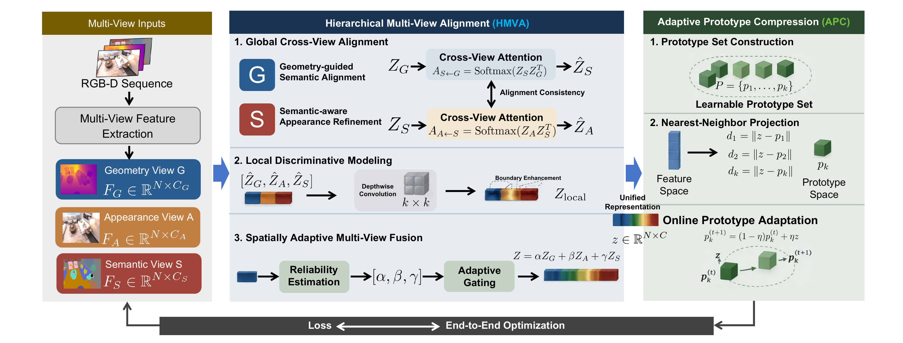

Hierarchical Multi-View Alignment with Adaptive Prototype Compression
论文概述 Overview
该研究将语义三维场景理解建模为层次化多视图对齐问题，围绕几何结构、视觉外观与语义线索之间的分布差异和空间可靠性变化展开。方法在全局层面使用跨视图注意力完成几何引导的语义增强与语义感知的外观细化，在局部层面通过空间自适应门控动态调节不同视图的贡献。 This work formulates semantic 3D scene understanding as a hierarchical multi-view alignment problem across geometry, appearance, and semantic cues. It uses cross-view attention for geometry-guided semantic enhancement and semantic-aware appearance refinement, while local spatially adaptive gating dynamically balances contributions from different views. 针对迭代优化过程中出现的特征漂移和冗余增长，工作引入自适应原型压缩机制，将新特征锚定到紧凑且动态更新的原型集合中，从而提升语义保真度、结构连贯性与运行效率。 To address feature drift and redundancy growth during iterative optimization, the method introduces adaptive prototype compression that anchors new features to a compact and dynamically updated prototype set, improving semantic fidelity, structural coherence, and efficiency.
方法流程 Method Pipeline

关键贡献 Key Contributions
- 提出层次化多视图对齐框架，联合建模几何结构、视觉外观与语义线索。 Proposes a hierarchical multi-view alignment framework that jointly models geometry, appearance, and semantic cues.
- 通过全局跨视图注意力和局部自适应门控，提升语义区域的一致性和结构表达。 Improves semantic consistency and structural representation through global cross-view attention and local adaptive gating.
- 引入自适应原型压缩机制，缓解特征漂移和冗余增长问题。 Introduces adaptive prototype compression to mitigate feature drift and redundancy growth.